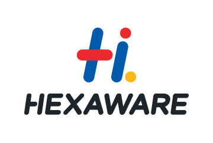

I hail from Kerala; currently living and working in Coimbatore, Tamil Nadu - India.
I am currently working as Lead Performance Engineer @ Vanenburg Software [India] Pvt., Ltd.,
I am a skilled Performance Engineer, with hands of experience in activities like Performance Testing, Profiling, Reporting, Analyasis, Identifying Bottleneck and Providing useful solutions
I would like to share some of my skill and experience including the following:
I have 12 + yrs of experience in Performance Engineering field. I have worked mostly on java-based applications.
I am involved in End-To-End Performance Testing of next generation products and providing solutions using most innovative open source tools and techniques
I worked as a Senior Performance Test Engineer for a US based Insurance Project and US based Airlines Project, I was involved in End-To-End Performance Testing of the Airlines & insurance application and providing test reports with appropriate recommendations using commercial tools
I worked as a Team member for a Netherlands based ICT project and Test Lead for a Germany based Banking Project, I was involved in End-To-End Performance Testing of both the applicaitions. I was providing test reports with appropriate recommendations using commercial and open source tools
Coimbatore, Tamil Nadu - India
Mobile Number On Request
srihari.29@gmail.com